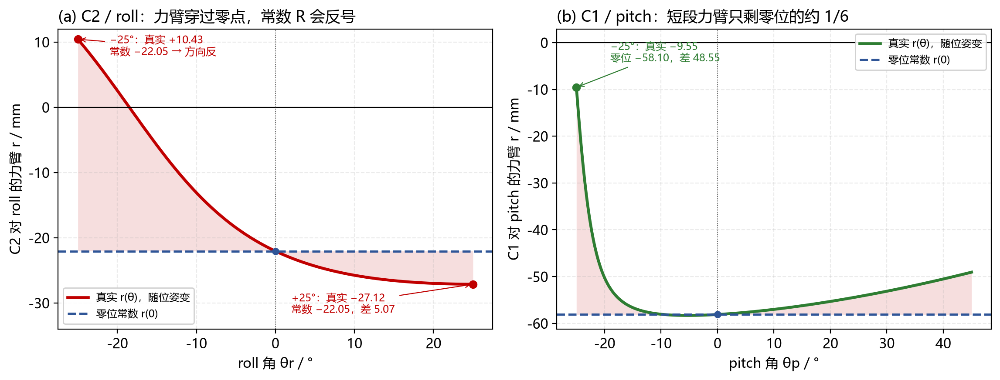
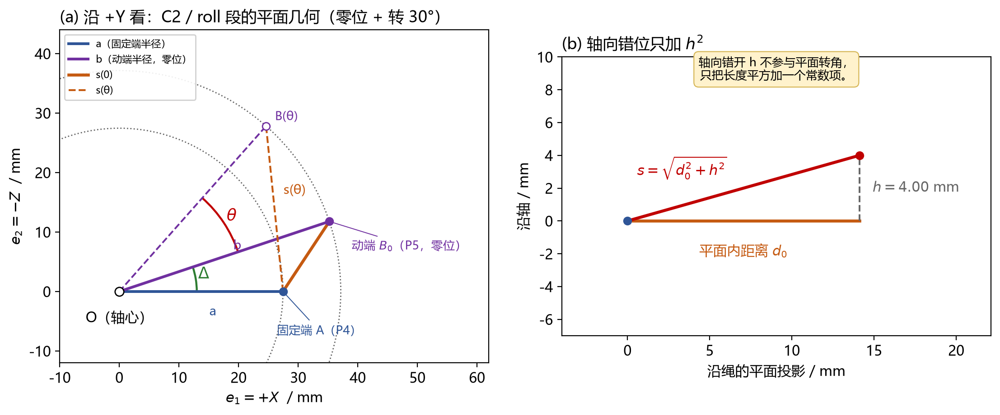
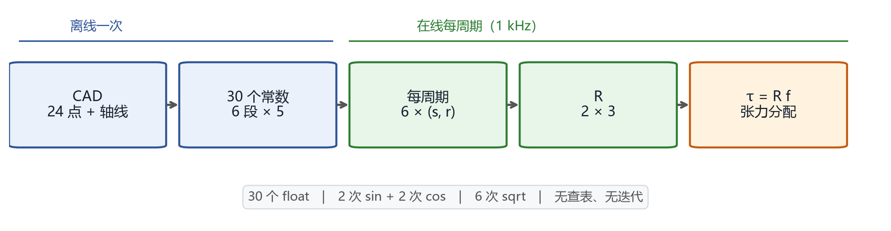

版本 v1.0 · 2026-10-26 · 对应模型 2026-10-21 fixed-center-polyline v1
目标：只回答两件事——为什么 R 不能当常数；怎样从几何原理推出一个 1 kHz 能跑的动态 R。
结论：R 是 2×3；每个元素是绳的力臂
r = −ds/dθ；当前模型 6 段由 30 个常数解析算出。C2 对 roll 的力臂在 −25°…+25° 内从 +10.43 mm 变到 −27.12 mm，用零位常数会在 −25° 处把力矩方向算反。适用：2026-10-21 固定中心折线模型，3 绳 / 2 自由度，roll ±25°，pitch −25…45°。本文的“动态”指 R 随关节角变化，不是动力学里的惯性项。
C2 对 roll 的力臂，零位是 r(0) = −22.05 mm。如果整个行程都用这个常数：
| 元素 | 零位常数 | 行程内实际 | 用零位常数的后果 |
|---|---|---|---|
| C2 / roll | −22.05 | +10.43 @ −25°；−27.12 @ +25° | −25° 处符号反，误差 32.48 mm |
| C3 / roll | +17.37 | −12.37 @ +25° | 符号反，误差 29.74 mm |
| C1 / pitch | −58.10 | −9.55 @ −25° | 差 48.55 mm，约 6 倍 |
| C2 / pitch | +11.80 | −5.30 @ +45° | 符号反，误差 17.10 mm |
单位都是 mm。这不是“差几个百分点”的精度问题，是力矩方向可能反的问题。

图 1：左：C2 对 roll 的力臂穿过零点；右：C1 对 pitch 在 −25° 只剩零位的约 1/6。虚线是零位常数，阴影是常数近似带来的误差。
力臂 r 的物理意义是“转轴到绳所在直线的垂直距离”。
关节一转，绳的动端绕轴画圆，绳的方向和它到轴的垂距都在变；当绳的延长线正好穿过轴时，r = 0；再转过去，r 变号。这个变化是几何本身带来的，不是装配误差，也不是绳的弹性。
所以：
r(0) 只描述一个姿态；r(θ)；| 方案 | 问题 |
|---|---|
| 零位常数 R | 上面那张表：几十毫米误差，甚至反号 |
| 2D 查表 + 插值 | 要存整张表；符号翻转和短段附近插值容易错；换几何要重做表 |
| 在线差分 | 每段要多次正运动学，计算量大，步长和噪声都影响结果 |
| 解析 5 常数 | 精确、每段只有 1 个角度变量，6 次调用就够 |
当前几何还有一个关键性质：每段绳只跨一个关节，所以绳长可以写成
c_i 是常数，s_ri 只随 roll 变，s_pi 只随 pitch 变。于是 R 的 roll 行只是 θr 的 3 个一维函数，pitch 行只是 θp 的 3 个一维函数。动态 R 不需要二维表，只需要 6 个一维解析式。
所以 R 本身不需要逐点辨识：几何确定后，R 就被确定；实验只需要标定零位、收放系数和张力阈值。
如果以后加一根从 base 直接到 palm 的绳，这个解耦立刻失效，必须重推通用绳长雅可比。本文所有结论都建立在“每段只跨一个关节”上。
设第 i 根绳的总长为 l_i，两个关节角为 q = [θr, θp]。定义
其中 $j=\mathrm{roll},\mathrm{pitch}$；$i=C1,C2,C3$。
R 是 2 行 3 列：行 = 关节，列 = 绳；f = [f_C1, f_C2, f_C3]ᵀ 是三根绳的张力；τ = [τ_roll, τ_pitch]ᵀ 是两个关节的力矩；R_ji 就是第 i 根绳对第 j 个关节的力臂，带符号。写成矩阵：
零位数值（mm）：
| C1 | C2 | C3 | |
|---|---|---|---|
| roll | −0.259 | −22.050 | +17.372 |
| pitch | −58.105 | +11.805 | +10.990 |
r > 0：正转时该段绳变短，张力产生正关节力矩；r < 0：正转时该段绳变长，张力产生负关节力矩；τ 用 N·mm；τ 用 N·m。不要混用 mm 和 m。常见写法
J = ∂l/∂q是 3×2；本文的 R 是−Jᵀ，是 2×3。两者只差转置和负号，但矩阵乘法的顺序不能写反。
因为 l_i = c_i + s_ri(θr) + s_pi(θp)，所以
这就是为什么“动态 R”在 MCU 上可行：它不是一张二维曲面，而是六个一维解析式。
取一段绳：固定端 A（例如 P4），动端零位 B₀（例如 P5），转轴过 o、方向为单位向量 â。
a：固定端到轴的距离；b：动端到轴的距离；h：两端沿轴的错开量，带符号；u⊥、v⊥：两个垂直于轴的分量。a、b、h 只与几何有关，与 θ 无关。它们就是“这一段绳的三个不变量”。

图 2：C2/roll 段的 a、b、Δ、s(θ)，以及轴向错位 h 只贡献 h²。
绕轴转 θ 时，垂直分量旋转：
所以
轴向 h â 与两个垂直分量都正交，平方时轴向单独分离：
把 v′⊥ 代进点积：
定义有向角 Δ：
于是
这就是余弦定理。把常数打包：
α、β、γ 只与几何有关，与 θ 无关。到这一步，单段绳长已经是一个闭式的一维函数，不需要迭代，也不需要查表。
本文约定力臂 r = −ds/dθ，所以
r(0) 这个式子很有用：算完 α、β、γ 后，先和零位表对一遍，可以立刻发现 Δ 的符号、e₂ 的方向或 γ 的正负有没有写反。
每根绳有两段会变：roll 段（P4–P5）和 pitch 段（P6–P7）。于是
三根绳 × 两段 = 6 次单段求值，得到 R 的 6 个元素。
当前六段的几何量与零位力臂：
| 段 | a / mm | b / mm | h / mm | Δ / ° | r(0) / mm |
|---|---|---|---|---|---|
| C1 / roll | 5.025 | 18.173 | +3.000 | +2.197 | −0.2594 |
| C2 / roll | 27.459 | 37.149 | +4.000 | +18.488 | −22.0497 |
| C3 / roll | 27.459 | 41.594 | +4.000 | −15.150 | +17.3720 |
| C1 / pitch | 58.310 | 62.160 | −0.1785 | +25.589 | −58.1046 |
| C2 / pitch | 13.416 | 25.298 | +0.2836 | −33.830 | +11.8049 |
| C3 / pitch | 13.416 | 25.298 | +6.2836 | −33.830 | +10.9904 |
C1/roll 的
r(0)只有 −0.259 mm：零位时 C1 绳段的延长线离 roll 轴只有 0.259 mm，力矩贡献很小，但对几何误差最敏感。C1/pitch 的 −58.1 mm 则是 pitch 的主力矩臂。
C2/roll 的平面分量（u₂、v₂ 取 e₂ = −Z，所以是负的 z；CAD 的 z = +5 对应 u₂ = −5）：
转 30°：
用 αβγ 复核：β = −1935、γ = +647，
两种算法一致。C2/roll 的完整扫描：
| θ / ° | 0 | 10 | 20 | 25 | 30 | 40 |
|---|---|---|---|---|---|---|
| s / mm | 14.671 | 18.894 | 23.521 | 25.884 | 28.249 | 32.922 |
| r / mm | −22.050 | −25.753 | −26.993 | −27.124 | −27.042 | −26.418 |
25° 的 s 是 25.884 mm，但 r(25°) 是 −27.124 mm；−26.993 mm 是 20° 的值。s 和 r 不要跨行抄。
C1/pitch 的 α + β 只有约 725.8 mm²，而 α、|β| 都是 7,000 量级；两个大数相加后只剩约 1/10 的量级，float32 下会掉精度。
所以固件不存 αβγ，而是存每段 5 个投影常数：
其中 e₁ = +X，e₂ = −Z，e₃ = e₁ × e₂ = +Y。这是一个右手平面基；注意 e₂ = −Z，所以 CAD 里的 z 要取负才能填进 u₂、v₂。例如 C2/roll 的 P4 是 (−27, −16, +5)，对应 (u₁, u₂) = (−27, −5)。
roll 段用 θr，pitch 段用 θp。六个 (s, r) 拼成 R 的两行。
第二种写法是常见的符号错误。它在闭环里的表现是“控制方向反、越纠越偏”。写完代码，先用零位 r(0) 对一遍：如果 C2/roll 算出 +22.05 而不是 −22.05，就是这里反了。
for (j = 0; j < 2; ++j) {
float th = (j == 0) ? roll_rad : pitch_rad;
float c = cosf(th), s = sinf(th);
for (i = 0; i < 3; ++i) {
float v1p = seg[j][i].v1 * c - seg[j][i].v2 * s;
float v2p = seg[j][i].v1 * s + seg[j][i].v2 * c;
float d1 = v1p - seg[j][i].u1;
float d2 = v2p - seg[j][i].u2;
float len = sqrtf(d1*d1 + d2*d2 + seg[j][i].h*seg[j][i].h);
R[j][i] = (d1*v2p - d2*v1p) / len;
seg_len[j][i] = len;
}
}
sqrt、6 次除法；这套结构适合 1 kHz 控制；但实际最坏执行时间必须在 H7 目标板、实际编译选项和中断负载下用 DWT 测量，主机时间不能代替。

图 3：离线一次生成 30 个常数，之后每个控制周期只做解析求值。
| 检查 | 含义 | 处理 |
|---|---|---|
六段有限、s > 1e-8 m |
数值有效 | 否则 R 全部置 NaN，不得沿用旧帧 |
| 角度在行程内 | roll ±25°，pitch −25…45° | 越界仍给数学结果，但控制不得使用 |
| pitch ≤ −24° | 低置信区；C1/pitch 在 −25° 只有 3.9006 mm | 提示，必要时降速/限幅 |
rank = 2 |
两行独立 | 当前工作空间 3,621/3,621 为真 |
| 条件数 | κ₂(R) | 当前工作空间 1.08–3.16 |
| 全正零空间 n | 是否存在“三绳一起收紧”的方向 | 当前工作空间 1,957/3,621 存在 |
不需要把整张工作空间都打印出来，按这个顺序做四件事：
| 步骤 | 做法 | 当前结果 |
|---|---|---|
| 1. 零位 | 手算/表单对 R(0) |
C2/roll = −22.0497 mm |
| 2. 单段 | 与 3D 刚体链式雅可比对拍 | 最大差 4.34×10⁻¹² mm（double） |
| 3. 全工作空间 | 3,621 个姿态，roll −25…25°，pitch −25…45° | 满行秩；条件数 1.08–3.16 |
| 4. 数值格式 | float32 vs double（9,224 个姿态） | 最大 6.32×10⁻⁵ mm（官方 4.67×10⁻⁵ mm） |
和第 2 步的“3D 链式雅可比”比，是独立路线：直接用 24 个 CAD 点做刚体正运动学，再逐段投影，不调用 5 常数。两条路线一致，说明 5 常数不是拟合，而是同一几何的等价改写。
CAD 的 0.2° 差分表也可以对，但要注意：它的最大差 0.032668 mm 出现在 pitch=−25° 边界，是差分截断，不是模型误差。做微米级验收要用解析式或更小的差分步长。
已知三根绳张力，直接乘 R 得到两个关节力矩。R 用当前姿态的，不用零位常数。
R 是 2×3，τ 只有 2 维，所以 f 有 1 维自由度：
R⁺ = Rᵀ (R Rᵀ)⁻¹：最小范数特解；n：R 的单位右零空间方向，满足 R n = 0；t：标量；在 n 全正时，它让三根绳一起收紧（预紧）。加上张力上下限 f_min ≤ f_i ≤ f_max 后，t 变成一个区间；区间为空就说明这个姿态/这个 τ 用三根绳实现不了，需要降低负载、换姿态或改绳路。不要只靠加大 t 硬顶，先饱和的那根绳会过载。
当前工作空间里 1,664/3,621 个姿态不存在全正 n。这时“三绳一起收紧”在数学上做不到，必须逐姿态检查；不能按 pitch 一个角度硬编码。
当前 v2 控制律是：
前馈 = k_i [ l_i(目标) − l_i(基线) ]
校正 = −k_p k_i ( R_i · e_rad )
前馈用绳长模型，校正用 R。R 的符号/数值错，校正方向就会错；R 用零位常数，在大角度处校正会偏。
动态 R 是每个控制周期更新一次的，不是上电算一次就缓存。
| 步骤 | 做什么 | 产物 |
|---|---|---|
| 1 | 从 CAD 取 24 个导向点和两根轴线；标清每个点属于 base / roll_link / palm | points_zero.csv、轴线 |
| 2 | 按“每段只跨一个关节”分段；确认 P4–P5 随 roll、P6–P7 随 pitch | 分段表 |
| 3 | 对每段算 u₁,u₂,v₁,v₂,h |
30 个常数（120 B） |
| 4 | 实现 6 次单段求值；先对零位 R(0) |
单段函数 |
| 5 | 用 3D 链式雅可比 + 全工作空间对拍 | 误差表 |
| 6 | 实机标定零位 δ、每绳收放系数 k_i、f_min/f_max、段长门限 |
标定文件 |
| 7 | 在 H7 上跑 1 kHz，用 DWT 测最坏执行时间 | 周期报告 |
前 3 步是离线一次；第 4–5 步是软件验证；第 6–7 步必须上实机。软件对拍不能替代实机标定。
30 个常数由几何生成，不要手改。换点、换轴或换绳路后，必须重新生成常数并重跑对拍；旧表和旧结论不能自动沿用。
| 错误 | 后果 | 怎么避免 |
|---|---|---|
| 用零位 R 常数 | 力臂差几十毫米，甚至反号 | 每周期用当前 θ 算 |
| 把 pitch 轴心当原点 | a、b、h 全错，pitch 行整体偏 | pitch 轴心是 (0,0,24) |
| 用 ‖v‖ 当半径 b | 少减了轴向分量 h | 先算 v⊥ = v − h₂â 再取模 |
| 角度用度直接喂 sin/cos | 结果完全错 | 内部统一 rad |
| 力臂符号取反 | 闭环正反馈，越纠越偏 | 用 r = −ds/dθ，零位对一遍 |
| 把 CAD 差分表当 0.001 mm 真值 | 在 pitch ≤ −24° 会把 0.03 mm 差分误差当模型误差 | 先确认差分步长和边界格式 |
| 只看“n 全正”就认为张力可行 | 分量比例可能让盒约束为空 | 逐姿态算 t 区间 |
| 轴 | 绳 | u₁ | u₂ | v₁ | v₂ | h |
|---|---|---|---|---|---|---|
| roll | C1 | +0.500000 | −5.000000 | +2.500000 | −18.000000 | +3.000000 |
| roll | C2 | −27.000000 | −5.000000 | −32.500000 | −18.000000 | +4.000000 |
| roll | C3 | +27.000000 | −5.000000 | +37.500000 | −18.000000 | +4.000000 |
| pitch | C1 | +6.000000 | −58.000000 | +32.472169 | −53.000000 | −0.178543 |
| pitch | C2 | +6.000000 | +12.000000 | +22.000000 | +12.500000 | +0.283587 |
| pitch | C3 | +6.000000 | +12.000000 | +22.000000 | +12.500000 | +6.283587 |
再次提醒：
u₂、v₂是e₂ = −Z分量；roll 段的u₂ = −5对应 CAD 的z = +5。不要直接把 CAD 的 z 填进来。
| 量 | 数值 |
|---|---|
| R(0) / mm | roll：−0.2594, −22.0497, +17.3720；pitch：−58.1046, +11.8049, +10.9904 |
| n(0) | (0.26444, 0.59491, 0.75905) |
| κ₂(0) | 2.1498 |
| 3D 对拍最大差 | 4.34×10⁻¹² mm |
| float32 最大差 | 6.32×10⁻⁵ mm |
| CAD 表最大差 | 0.032668 mm（差分截断，不是模型误差） |
| 条件数范围 | 1.0836–3.1637 |
| 全正 n 的姿态 | 1,957 / 3,621 |
| C2/roll 力臂变化 | +10.427 → −27.124 mm |
| C1/pitch 力臂变化 | −9.551 → −58.307 mm |
公式、数值与代码均对应 verify_dynamic_R.py、wrist_model.py 和 H7 包 wrist_r.c；图由 make_figures.py 与 make_intro_figures.py 生成。